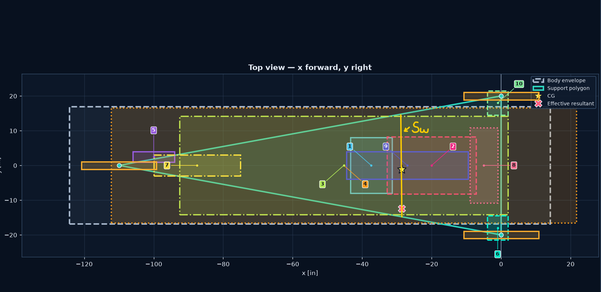
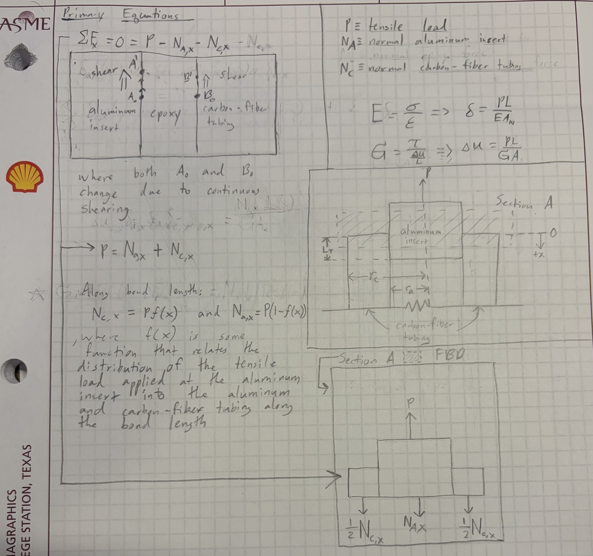
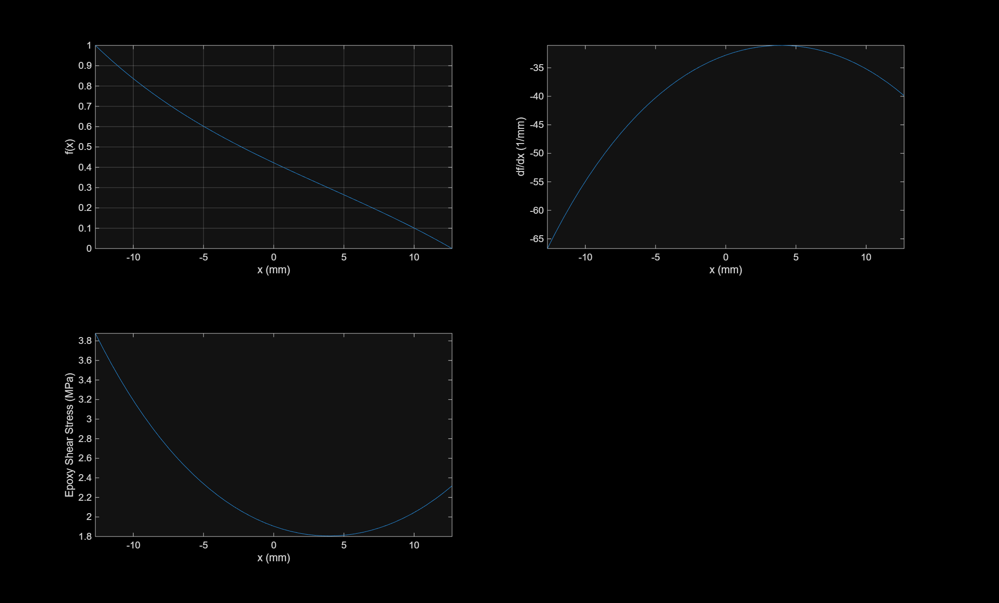
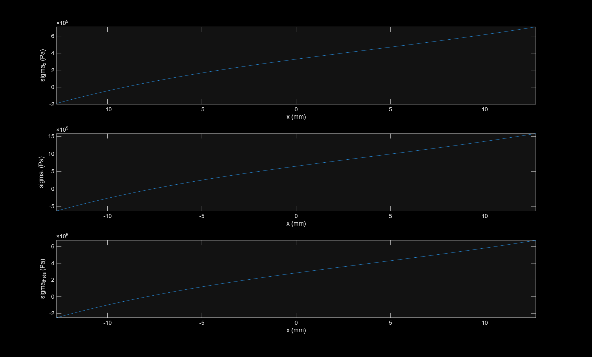

As a Suspension Engineer, over the summer we determined the appropriate track width of the car, allowing us to set our
suspension points using an in-house calculator to accomodate forces on a double-wishbone
suspension system.
I am currently setting bonding geometry for carbon-fiber
tubing epoxied to aluminum inserts for the A-Arms in our suspension system. Using carbon-fiber
tubing would allow use to heavily decrease the weight due to the suspension system, since last year
steel tubing was used.
I am setting calculations for the axial displacement and maximum shear stresses of
parts in the bonding section (aluminum insert, epoxy, and carbon-fiber tubing)
at expected maximum forces to determine the optimal
geometry for these components and their distances. I am also determining tensile, compression, and
faigue testing parameters (e.g. strain rate) that will be set on our Instron machines to find bonding properties for the specific
materials we order.
I will be posting updates periodically to my research notes and code!
Click to view my research notes!
Click to download my epoxy shear calculator with detailed comments!


Figure contains a plot of f(x), which denotes the fraction of the applied tensile load on the carbon-fiber tubing. Bottom left graph denotes the distribution of shear stress experience by the epoxy along the bond length, where x = 0 at bond length center.

Figure contains plots denoting normal stresses experienced by the epoxy in the radial, tangential, and axial direction.